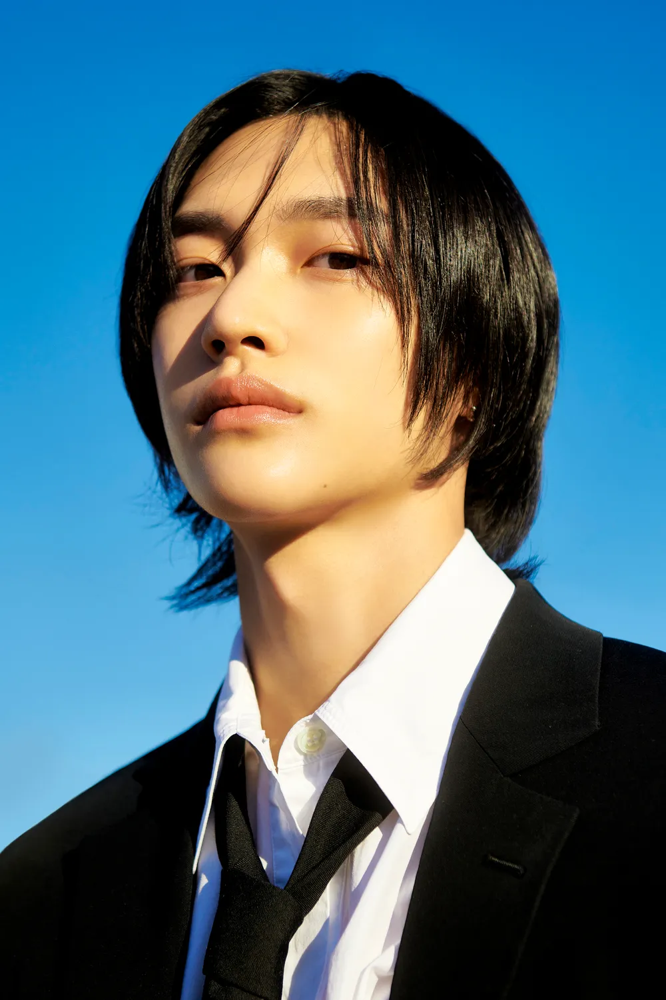

이름: 박원빈
출생: 2002년 3월 2일
SM엔터테인먼트 소속 7인조 보이그룹 RIIZE의 멤버.
맑고 매력적인 음색을 가진 동시에 허스키한 느낌을 가졌다. Get a guitar 첫 소절에서 허스키한 면을 잘 보여준다. 라이브 실력도 뛰어나고 음역대도 넓은 편이라 모든 곡의 첫 파트, 후렴구, 고음 애드립 같은 중요한 파트를 맡고 있다. 메인보컬인 소희 다음으로 주요 보컬 멤버라고 언급된다.